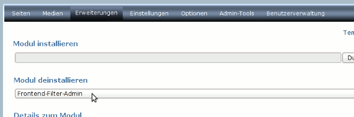

| OutputFilter-Dashboard Modul installieren (de) | |
| Installation des OutputFilter-Dashboard Moduls | |
| Voraussetzungen | Website Baker 2.8 oder neuer oder WBCE |
| Vor der Installation | Vor der Installation von OutputFilter-Dashboard muß das uralte Frontend-Filter-Admin Modul - wenn vorhanden - deinstalliert werden, nicht zu verwechseln mit dem Frontend-Output-Filter! |
| Installation | Installieren Sie OutputFilter-Dashboard wie üblich. |
| Nach der Installation | Website Baker ab Version 2.8.3 sp6 und WBCE ab Version 1.1 entalten bereits die Anpassungen um Outputfilter Dashboard zu verwenden. Im klassischen Website Baker muss das Outputfilter Dashboard explizit in den Einstellungen vom Frontend Output Filter aktiviert werden. Außerdem funktionieren im klassischen Website Baker die Modulspezifischen Filter nicht ohne Core-Anpassungen. Dafür ist nach wie vor die Anpassung der Datei wb/framework/frontend.functions.php (siehe unten) erforderlich. |
| Core-Dateien verändern | Damit OutputFilter-Dashboard richtig funktioniert müssen zwei “Core”-Dateien angepaßt werden. |
| wb/ | |
| wb/ |
Vor der Installation von OutputFilter-Dashboard muß das uralte Frontend-Filter-Admin Modul - wenn vorhanden - deinstalliert werden, nicht zu verwechseln mit dem Frontend-Output-Filter!
Bitte beachten Sie, das bei der deinstallation des Frontendfilters alle eingerichteten Inline-Filter ebenfalls gelöscht werden. Möglicherweise wollen Sie diese Filter vor der Deinstallation sichern, um sie in OutputFilter-Dashboard wieder einzurichten. Sichern Sie die Funktion der Inline-Filter durch Copy&Paste, z.B. durch kopieren in einen Texteditor. Richten Sie dann in OutputFilter-Dashboard den Filter wieder ein.
Nun müssen noch alle möglicherweise installierte Filter-Module deinstalliert werden.
Website Baker ab Version 2.8.3 sp6 und WBCE ab Version 1.1 entalten bereits die Anpassungen um Outputfilter Dashboard zu verwenden. Im klassischen Website Baker muss das Outputfilter Dashboard explizit in den Einstellungen vom Frontend Output Filter aktiviert werden. Außerdem funktionieren im klassischen Website Baker die Modulspezifischen Filter nicht ohne Core-Anpassungen. Dafür ist nach wie vor die Anpassung der Datei wb/framework/frontend.functions.php (siehe unten) erforderlich.
Für ältere Versionen müssen noch zwei “Core”-Dateien angepaßt werden.
Der nächste Abschnitt erklärt die notwendigen Schritte.
// Collect general website settings $wb->get_website_settings(); // Load functions available to templates, modules and code sections // also, set some aliases for backward compatibility
// Collect general website settings
$wb->get_website_settings();
// Load OutputFilter functions
if(file_exists(WB_PATH .'/modules/outputfilter_dashboard/functions.php')) {
require_once(WB_PATH .'/modules/outputfilter_dashboard/functions.php');
opf_controller('init');
}
// Load functions available to templates, modules and code sections
// also, set some aliases for backward compatibilityrequire(WB_PATH.'/templates/'.TEMPLATE.'/index.php');
$output = ob_get_contents();
if(ob_get_length() > 0) { ob_end_clean(); }
// execute frontend output filters
if(file_exists(WB_PATH .'/modules/output_filter/index.php')) {
include_once(WB_PATH .'/modules/output_filter/index.php');require(WB_PATH.'/templates/'.TEMPLATE.'/index.php');
$output = ob_get_contents();
if(ob_get_length() > 0) { ob_end_clean(); }
// apply outputfilter
if(function_exists('opf_controller')) {
$output = opf_controller('page', $output);
}
// execute frontend output filters
if(file_exists(WB_PATH .'/modules/output_filter/index.php')) {
include_once(WB_PATH .'/modules/output_filter/index.php'); ob_start(); // fetch original content
require(WB_PATH.'/modules/'.$module.'/view.php');
$content = ob_get_clean();
} else {
continue;
} ob_start(); // fetch original content
require(WB_PATH.'/modules/'.$module.'/view.php');
$content = ob_get_clean();
if(function_exists('opf_controller')) {
$content = opf_controller('section', $content, $module, $page_id, $section_id);
}
} else {
continue;
}else {
require(PAGE_CONTENT);
}else { // Searchresults! But also some special pages,
// e.g. guestbook (add entry), news (add comment) uses this
ob_start(); // fetch original content
require(PAGE_CONTENT);
$content = ob_get_contents();
ob_end_clean();
// Apply Filters
if(function_exists('opf_controller')) {
$content = opf_controller('special', $content);
}
// Print Content
echo $content;
}